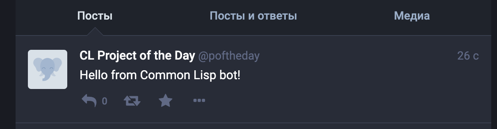
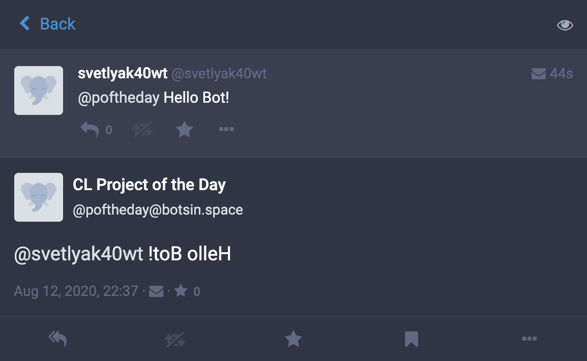

Lisp Project of the Day
glacier
You can support this project by donating at:


Or see the list of project sponsors.
glacier
| Documentation | 😀 |
| Docstrings | 😀 |
| Tests | 😀 |
| Examples | 😀 |
| RepositoryActivity | 😀 |
| CI | 🥺 |
This is the library by @_compufox. It is a wrapper around Mastodon's API allowing to write bots for this messaging platform.
To test the glacier, you need to create a development application for Mastodon and get the API access token. Here is an article describing how to do it.
Now you can send a single message (they are called toots on Mastodon).
POFTHEDAY> (defparameter *bot*
(make-instance 'glacier:mastodon-bot
:config-file "glacier.config"))
POFTHEDAY> (glacier:run-bot (*bot*)
(glacier:post (format nil "Hello from Common Lisp bot!")
:visibility :public))
There is also a macro to make bot do something in specified time interval. With this code it will make a post every 5 minutes:
POFTHEDAY> (let ((number 0))
(glacier:run-bot (*bot*)
(glacier:after-every (5 :minutes :run-immediately t)
(incf number)
(glacier:post (format nil "Iteration ~A" number)
:visibility :public))))But to make bot useful, we need to learn it how to listen other people. Usually, when I'm learning something, the first thing I'm trying is something stupid.
In this case it was a little function which saves into the global variable the last message recceived by the bot:
POFTHEDAY> (defvar *last-message*)
POFTHEDAY> (defun on-message (message)
(setf *last-message* message))
POFTHEDAY> (defparameter *bot*
(make-instance 'glacier:mastodon-bot
:config-file "glacier.config"
:on-notification 'on-message))
POFTHEDAY> (glacier:run-bot (*bot*))Notification stores the toot's type, author, timestamp and id. Also it has the status attribute. Status is another object holding all metadata about a toot:
POFTHEDAY> (tooter:status *last-message*)
#<TOOTER-OBJECTS:STATUS svetlyak40wt@fosstodon.org #104677985579935599>
POFTHEDAY> (describe *)
#<TOOTER-OBJECTS:STATUS svetlyak40wt@fosstodon.org #104677985579935599>
@svetlyak40wt@fosstodon.org 2020.8.12 19:08:21
| Hello Bot!
0♺ 0❤
;; In Emacs Inspector
#<TOOTER-OBJECTS:STATUS {1004669693}>
--------------------
Class: #<STANDARD-CLASS TOOTER-OBJECTS:STATUS>
--------------------
Group slots by inheritance [ ]
Sort slots alphabetically [X]
All Slots:
[ ] ACCOUNT = #<TOOTER-OBJECTS:ACCOUNT svetlyak40wt@fosstodon.org #249236>
[ ] APPLICATION = NIL
[ ] BOOKMARKED = NIL
[ ] CONTENT = " Hello Bot!"
[ ] CREATED-AT = 3806248101
[ ] EMOJIS = NIL
[ ] FAVOURITED = NIL
[ ] FAVOURITES-COUNT = 0
[ ] ID = "104677985579935599"
[ ] IN-REPLY-TO-ACCOUNT-ID = NIL
[ ] IN-REPLY-TO-ID = NIL
[ ] LANGUAGE = :EN
[ ] MEDIA-ATTACHMENTS = NIL
[ ] MENTIONS = (#<TOOTER-OBJECTS:MENTION poftheday #249231>)
[ ] MUTED = NIL
[ ] PARENT = NIL
[ ] PINNED = NIL
[ ] POLL = NIL
[ ] PREVIEW-CARD = NIL
[ ] REBLOGGED = NIL
[ ] REBLOGS-COUNT = 0
[ ] REPLIES-COUNT = 0
[ ] SENSITIVE = NIL
[ ] SPOILER-TEXT = ""
[ ] TAGS = NIL
[ ] URI = "https://fosstodon.org/users/svetlyak40wt/statuses/104677985568296654"
[ ] URL = "https://fosstodon.org/@svetlyak40wt/104677985568296654"
[ ] VISIBILITY = :DIRECTLets teach our bot to reply with a reversed string:
POFTHEDAY> (defun on-message (message)
(when (glacier:mention-p message)
(let* ((status (tooter:status message))
(text (tooter:content status)))
(glacier:reply status
(reverse (string-trim '(#\Space)
text))))))
POFTHEDAY> (glacier:run-bot (*bot*))There result is:

To make this code work, I have to patch glacier because a library it uses changed and break the glacier in some places. If you want to try it yourself apply this patch or use my fork:
https://github.com/compufox/glacier/pull/5
There is also API to define commands bot should react on. You will find the example in the README.
Brought to you by 40Ants under